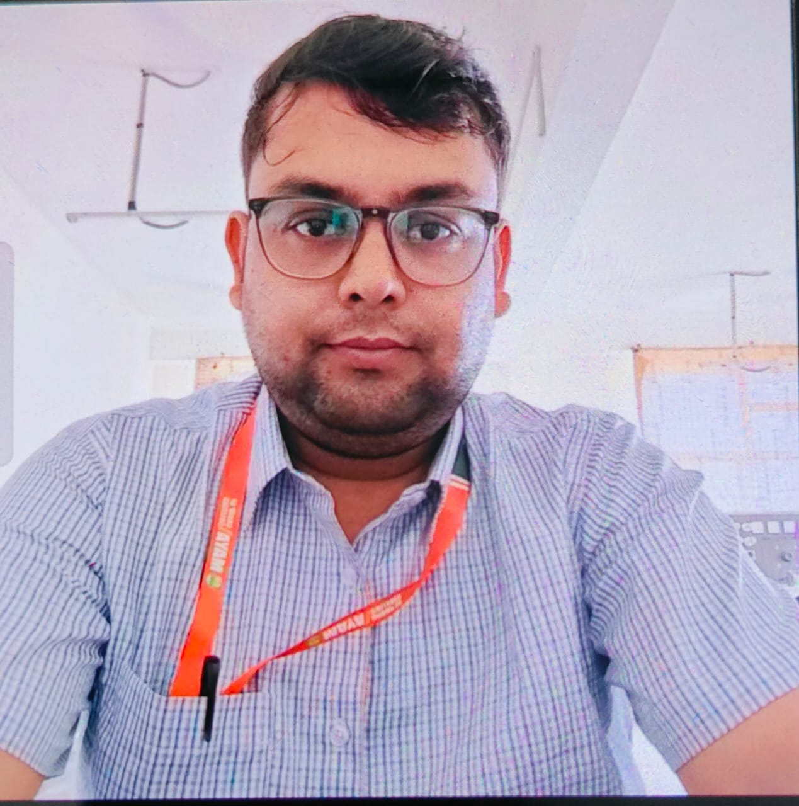

With over 15 years of experience in teaching, our educators have consistently demonstrated excellence, earning numerous awards for their commitment to student success. We believe in going beyond limits to unlock each student's full potential and maximize their performance in mathematics.
As a University Topper in Abstract Algebra and Discrete Mathematics, our lead instructor brings unparalleled expertise to the classroom, offering a deep understanding of complex mathematical concepts. Our research advisor guides students in the process of writing and publishing research papers, equipping them with valuable skills for academic growth.
We emphasize personalized learning by using tailored methods to make even the most intricate concepts easily accessible to students. This ensures that every student receives individual attention and is coached toward achieving measurable results. With a focus on building confidence, we work to remove the fear of mathematics and empower students to tackle challenges head-on.
Flexible timing and result-driven coaching ensure that students can learn at their own pace while achieving academic excellence. Whether you’re struggling with specific topics or looking to deepen your understanding, our approach guarantees a transformative learning experience that helps students succeed beyond expectations.
Learn MoreAs a faculty Dr. Neelam is a very good academician and specializes in mathematics. She wsa the best faculty of my campus. Students still remembered her for her teaching skills.
Hello Ma'am, How are you doing During my time as Dr. Neelam Tyagi's student, I was consistently impressed by her teaching prowess and dedication. She possesses a rare ability to simplify complex mathematical concepts without compromising on depth. Her patience and willingness to ensure every student understood the material were commendable. Thanks to her guidance, I not only improved my grades but also developed a deeper appreciation for mathematics.

Respected, Dr Neelam Tyagi Ma'am, I am extremely grateful to you for the efforts u put to guide me for steps. Mam u taught me from the very beginning of how the research field is about. Methodologies to work and publish research work is something very precious u taught. Thanks for all the motivation and guidance that u provided throughout and even now add an immense value to me.
Dear Neelam tyagi Words cannot fully express the gratitude I feel for everything you do. Your unwavering dedication, kindness, and passion for teaching have profoundly impacted my life. You go above and beyond to ensure each student feels valued and understood, creating a classroom environment filled with love and learning. Thank you for being not just a teacher, but a mentor and a friend. Your lessons go beyond textbooks, teaching us about life, perseverance, and compassion. With heartfelt appreciation and love, I want you to know that your efforts are seen and cherished. With all my love and respect
Dear Dr. Tyagi Ma'am, You are a great person to work with and I truly appreciate the time and effort you put into doing an excellent job. I'm continually impressed by how you're able to inspire everyone on the team to do their best. I am so grateful to work with you every day. Your continued support and all of the help you provided on our project was invaluable. It truly means so much. If everyone had coworkers as great as you, no one would ever complain about work again. I appreciate your team spirit and enthusiasm every day. Thanks for all you do.
It is with immense joy that I write this testimonial for Professor Neelam Tyagi. I was fortunate to be her student during my first semester at Uttarakhand Technical University, where she instructed us in M1 Mathematics. Professor Neelam Tyagi is an exceptional teacher and mentor. Her expertise in mathematics is matched by her exceptional teaching skills, making complex concepts accessible and engaging. Beyond her academic role, she genuinely cares about her students' well-being. She fostered a welcoming atmosphere in the classroom, encouraging open discussions and collaborative learning. Professor Tyagi's mentorship extended far beyond the classroom. She provided invaluable guidance on academic planning and career choices, demonstrating a sincere investment in her students' futures. In conclusion, I want to express my heartfelt gratitude for her continued mentorship and extend my best wishes for her future endeavors.

Dear Ma'am, I am writing to express my sincere appreciation for your exceptional guidance and support throughout my BTech studies, particularly in mathematics. Your expertise in the subject and your dedication to ensuring every student grasps the material have made a profound impact on my academic journey. Mathematics has always been a challenging subject for me, but your patient and thorough explanations have transformed my understanding and confidence. Your approachability and willingness to clarify concepts, both in and out of class, have been instrumental in my academic success. Beyond teaching the curriculum, you have inspired me to approach problems analytically and to persevere through challenges. Your passion for mathematics is contagious, and it has motivated me to delve deeper into the subject matter. I am truly grateful for the time and effort you invest in your students. Your commitment to our learning and your ability to make complex topics understandable have not only helped me excel academically but have also fostered a genuine interest in mathematics. Thank you once again, Ma'am, for being an exceptional educator and mentor. Your influence will undoubtedly stay with me throughout my career.

First of all, I would like to express my heartfelt gratitude to you. Because of your guidance, it became easy for us to manage our semester during our college time. Our first meeting with you was in the college seminar hall, and I remember very well that there was a discussion on the matrix and its classification, since then I liked your way of teaching and explaining. Our mathematics became easier. I will always be grateful to you that due to your guidance, our college and semester time became easy. Thank you so much ma'am for supporting all of us students so much.

We are very grateful for immense help and guidance Neelam mam provided our daughter with M2 . She made it her personal mission to get her through with flying colors .
"My childhood tutor's teaching ability is exemplary. She possesses a rare gift for simplifying complex subjects, making learning enjoyable and accessible. Her patient demeanor and personalized approach catered to my learning style, nurturing both my academic understanding and confidence. Her passion for education was infectious, instilling in me a lifelong thirst for knowledge. I credit much of my academic success to her exceptional teaching skills."

Walhekar Wadi, Pune-411033
+91 9766651903
www.drneelamacademy.in
drneelamacademy123@gmail.com